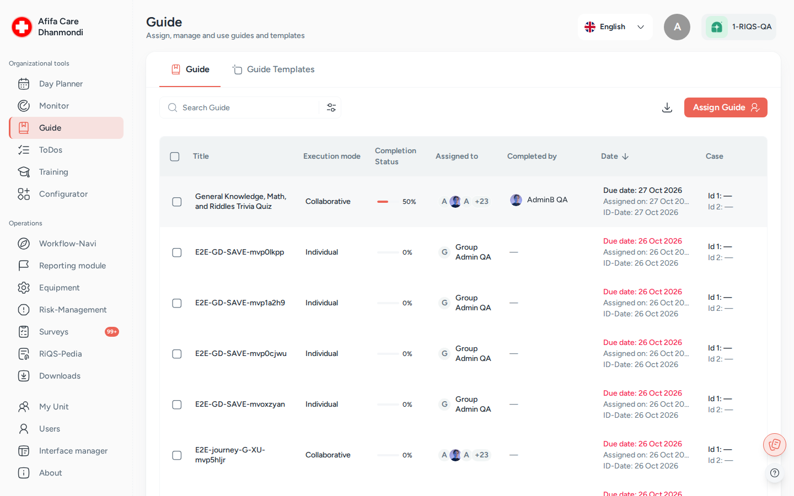

Process Guide¶
In one sentence: Send a step-by-step checklist (a "guide") to the right people, let them work through it step by step, and keep proof of who did what and when. Menu: Guide · Status: Live

Guide: assigned guides with execution mode, progress and due dates. Screens show test data.
What it is¶
Many jobs in a practice follow fixed steps: opening the practice in the morning, preparing a treatment room, onboarding a new colleague. A guide writes these steps down once. The Process Guide module sends that guide to the people who must do the work, and records each step as they complete it.
Think of it as a printed checklist on a clipboard, but one that knows who must sign it, shows the manager the progress in real time, and keeps the signed copy forever. Each step can carry help: an instruction, a file, or a form from RiQS-Pedia that must be filled in.
The guide itself (its steps and attachments) is built in the Configurator. The Process Guide module is where you send it to people, do it, and follow it up.
Which one do I use? Process Guide, Monitoring and Open Items are easy to mix up.
Use … when … Example Guide a job has several steps that people must work through in order "Morning opening: 8 steps" Monitoring you want to check regularly how well something is done, with a score from 0 to 100% "Fridge temperature checked: daily" Open Items one thing must be done by one date "Replace the broken lamp in room 2 by Friday" Rule of thumb: many steps → Process Guide. A score → Monitoring. A single job → Open Items.
Key terms¶
| Term | Meaning |
|---|---|
| Guide | A checklist made of steps. Built in the Configurator, then assigned here. The app sometimes calls it a Checklist. |
| Step (task) | One line of the guide. It can have a description, a budget, extra information and attachments. |
| Assign | Sending a guide to a unit and its people, with a due date or a repeat schedule. Each assignment creates its own copy of the guide. |
| Individual guide | Every assigned person works through their own copy. The guide is finished when each person has finished. |
| Collaborative guide | All assigned people share one copy. Any of them can complete a step for everyone. |
| Cross-unit guide | A guide with a separate part for each unit. Each unit works on its own part and can only read the other parts. Always collaborative. |
| Standard guide (template) | A guide that is not sent to anyone. Users start it themselves with Use Template whenever they need it, which makes a personal copy. |
| Case details | Optional fields Case ID 1, Case ID 2 and ID Date that link a guide to a specific case. |
| Draft | A step with remarks or attachments saved but not completed yet. |
| Execution mode | List column that shows Individual or Collaborative. |
Who uses it¶
| Role | What they typically do here |
|---|---|
| RiQS Administrator | Supports clients. Can assign, deactivate and delete guides in any unit. |
| Group Administrator | Assigns guides across the organisations of the group, also across several units at once. |
| Administrator | Assigns guides across the units of the organisation; creates standard guides. |
| Power User | Runs guides for their unit: assigns them, creates standard guides, follows progress, deactivates and deletes. |
| Management | Assigns guides, creates standard guides, follows progress, deactivates and deletes guides. |
| Professional | Opens the guides assigned to them and completes the steps. Starts standard guides with Use Template. |
How it works¶
Build (Configurator) → Assign → Work through the steps → 100% complete → Inactive
- Build. A Power User or administrator builds the guide in the Configurator: title, topic, steps, attachments, and the units that may use it.
- Assign. In Guide, they assign the guide to one or more units and to all or selected people, with a due date or a repeat schedule. They choose Individual or Collaborative.
- Notify. The guide shows up in the assignees' Process Guide list and in their Cockpit (Workflow-Navi).
- Work. Each assignee opens the guide and goes step by step. For each step they can add remarks, attach files, fill in the attached forms, then click Save as draft or Save & Complete.
- Follow up. The manager sees the progress in percent, who completed what, and who is still pending. They can download a report.
- Close. When all steps are complete the guide reaches 100%. Guides are then set to Inactive (by hand, or automatically for some guide kinds, see Rules to know).
Statuses you will see
| Status | Meaning | What moves it on |
|---|---|---|
| Pending / 0% | Assigned, nothing done yet | An assignee completes a step |
| In Progress (1–99%) | Some steps done | More steps completed |
| Completed (100%) | All required steps done by the required people | — |
| Overdue (row shown in red) | Due date has passed and the guide is not 100% | Completing it, or deactivating it |
| Active / Inactive | Whether the guide is still in the working list | The status switch, bulk action, or the automatic job |
How to …¶
How to assign a guide¶
Who can do this: RiQS Administrator, Group Administrator, Administrator, Power User, Management
- Open Guide and click the assign button. The Assign Checklist panel opens.
- Choose a Topic, then the guide (Select a guide). Only guides released for your unit are offered.
- Choose the Unit (or several units). Administrators can tick Select all units.
- Choose the mode: Individual Guide (each person their own copy) or Collaborative Guide (one shared copy). With Individual you can also tick Must be completed by all.
- Under Assignment, leave the default (all employees of the unit) or pick specific people.
- Set a Due Date, or switch on the recurring option (shown as Mark as Recurring To-do) and set the interval, start and end date. You can tick Avoid Weekends.
- Optional: tick Add Case Details (Case ID 2 and ID Date then become required), Add Category Details, and Mail if task is not checked with the people who should get the email.
- Click Save.
Result: The guide appears in the list with 0% and its execution mode. Assignees see it in their list and Cockpit.
How to create a standard guide (template)¶
Who can do this: RiQS Administrator, Group Administrator, Administrator, Power User, Management
- Open the Assign Checklist panel as above.
- Tick Create Guide Template.
- Choose topic, guide and unit, then click Save. No due date or assignees are needed.
Result: The guide appears on the Standard guide tab. Users of the unit can start it whenever they need it.
How to use a standard guide¶
Who can do this: every role
- Open Guide and switch to the Standard guide tab.
- Click Use Template on the guide you need.
- Fill in the case details if asked, and work through your copy.
Result: You get your own copy of the guide. Once completed, it is listed under Responses on the template, as proof.
How to complete a guide¶
Who can do this: every role, for guides assigned to them (if the guide was sent to the whole unit: anyone in that unit)
- Open the guide from Guide or from your Cockpit. The first step you have not done yet opens automatically.
- Read the step and open its attachments. If a form is attached, click Fill out template / open the RiQS-Pedia Form and complete it.
- Add remarks (Add Remarks), attach photos or files, and enter the Actual Cost if the step has a budget.
- Click Save as draft to keep your work without completing the step, or Save & Complete to finish it.
- Repeat for each step.
Result: Completed steps turn green and the progress circle goes up. At 100% the manager's list shows who completed it and when.
How to follow up and download a report¶
Who can do this: every role (Professionals see and download only the guides assigned to them)
- On the Guide tab, use Search and Filters (topic, category, guide type, assigned user, completed by, due date range, case details, progress and module status).
- Click a column header to sort. Click a row to open its details: who is assigned, who completed it, and who is still pending.
- Click Download Report and choose Xls file (the list) or Docx file (a photo documentation report).
Result: The file is prepared and downloaded.
How to deactivate or delete guides¶
Who can do this: RiQS Administrator, Group Administrator, Administrator, Power User, Management (in audit-safe mode, once a guide is assigned: RiQS Administrator only)
- On the Guide tab, tick one or more rows.
- Click Inactive to remove them from the working list, or Delete.
- For a recurring guide, choose whether to delete only the selected guide or present and future guides. Confirm.
Result: Inactive guides are found with the status filter Inactive. Deleted guides are gone.
Rules to know¶
- One guide, several kinds. The Guide Type filter shows where a guide came from: General (assigned here), Equipment (maintenance), Shift plan (Shift Plan) or Reporting (Incident Reports).
- The list shows everything by default. There is no "next 14 days" filter any more.
- Overdue = the due date is before today and the guide is not 100%. The whole row is shown in red. Standard guides are never overdue.
- Individual + Must be completed by all: the guide only counts as done when every assignee has finished it. Progress shows the share of people who finished (two people, one done = 50%).
- Collaborative: one person's draft is visible to the others; a completed step shows who did it and when.
- Cross-unit guides are always collaborative. Each unit answers its own part; other units' parts are read-only. When a cross-unit guide is sent to several units you can tick Notify assignees via Workflow-Navi.
- Forms come first. If a step has a RiQS-Pedia form attached, Save & Complete stays blocked until the form is complete.
- A draft needs content. You can only save a draft once you have added remarks or an attachment.
- Shift plan guides are tied to their day. A guide created from a shift can only be worked on its due date. After that day it is locked.
- Case details can be changed until the guide reaches 100%.
- Recurring guides create one guide per date of the series. The end date is required.
- Automatic inactive: guides from a shift become inactive after their day. Copies made with Use Template become inactive 24 hours after they reach 100%, or after their end date if never started. (See Open questions about other guides.)
- Deleting a standard guide also deletes all copies made from it. Every role except Professional may delete guides; Professionals cannot delete anything.
- Audit-safe mode: a guide that is not yet assigned to anyone can be deleted by every role except Professional. Once a guide has been assigned, only the RiQS Administrator can delete it.
- Emails: with Mail if task is not checked switched on, the chosen people get an email when the guide is overdue.
Who can do what¶
| Action | RiQS Admin | Group Admin | Admin | Power User | Management | Professional |
|---|---|---|---|---|---|---|
| See the Process Guide list | ✅ | ✅ | ✅ | ✅ | ✅ | Own assigned guides only |
| Assign a guide | ✅ | ✅ | ✅ | ✅ | ✅ | ❌ |
| Create a standard guide (template) | ✅ | ✅ | ✅ | ✅ | ✅ | ❌ |
| Use a standard guide | ✅ | ✅ | ✅ | ✅ | ✅ | ✅ |
| Complete steps | If assigned | If assigned | If assigned | If assigned | If assigned | If assigned |
| Edit a guide (case details, settings) | ✅ | ✅ | ✅ | ✅ | ✅ | If assigned |
| Activate / deactivate | ✅ | ✅ | ✅ | ✅ | ✅ | ❌ |
| Delete (regular) | ✅ | ✅ | ✅ | ✅ | ✅ | ❌ |
| Delete (audit-safe, not yet assigned) | ✅ | ✅ | ✅ | ✅ | ✅ | ❌ |
| Delete (audit-safe, once assigned) | ✅ | ❌ | ❌ | ❌ | ❌ | ❌ |
| Download report | ✅ | ✅ | ✅ | ✅ | ✅ | ✅ |
| Build or edit the guide itself (Configurator) | ✅ | ✅ | ✅ | ✅ | ✅ | ❌ |
Connected modules¶
- Configurator: where guides and their steps are built and released for units.
- RiQS-Pedia and Interactive documents: files, forms and templates attached to steps. Answers to forms are stored as filled-in documents.
- Cockpit (Workflow-Navi): shows the guides a person must work on, until they have finished.
- Shift Plan: a shift or daily task can carry a guide. It creates a guide for the person on that shift.
- Equipment: maintenance can come with a guide.
- Incident Reports: a guide can be assigned from a report.
- Monitoring and Open Items: the other two ways to give people work. See "Which one do I use?" above.
Open questions¶
- Management deleting and deactivating: the rights table lets Management delete guides (also used templates) and use bulk Delete / Inactive; the feature list says Management cannot. This page follows the rights table. Should the feature list be corrected?
- Who may download reports: the rights table lets every role download reports; the feature list says Professionals cannot download guide reports and Management cannot download a single guide. This page follows the rights table. Should the feature list be corrected?
- RiQS Administrator completing guides: the rights table lets every role work on guides assigned to them; the feature list says the RiQS Administrator cannot complete guides. This page follows the rights table. Should the feature list be corrected?
- Automatic inactive after 48 hours: the feature list says every completed guide becomes inactive 48 hours after completion. The system does this only for shift guides (after their day) and for Use Template copies (24 hours after completion). Should normal assigned guides also become inactive automatically, and after 24 or 48 hours?
- "Not Completed" button: the feature list describes an orange Not Completed button for saving a step without completing it. The app uses Save as draft instead. Is the feature list out of date?
- Copies from Use Template: should a copy that is still in progress appear in the user's Guide list straight away? Today it does not, and Responses on the template stays empty until a copy is completed.
- Overdue email: the feature list says assignees get an overdue reminder. The assign panel sends it to the people picked under Mail if task is not checked. Who should receive it by default?
Last reviewed: 2026-10-26